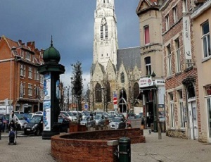
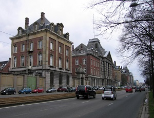
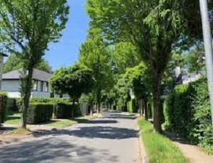

Menu
ACCUEIL
L'HISTOIRE DE BRUXELLES
MONUMENTS
PERSONNAGES
COMMUNES
FOOTBALL
LE CLUB
JOUEURS
PALMARES
Un petit jeu ?
Pas encore inscrit ?
CONTACT
LES DIFFERENTS COMMUNES BRUXELLOISES :
La carte est cliquable


